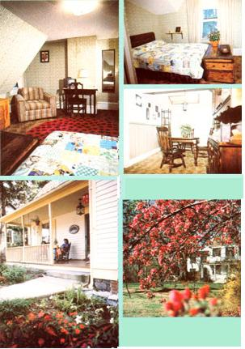

An extra room and a bit of hospitality can bring you friends and supplement your income.
Many residents of the British Isles traditionally open their homes to tourists by operating bed-and-breakfast establishments. Such enterprises are just what the name implies: Guests receive overnight accommodations, and breakfast the following morning, in exchange for a (usually modest) fee. The system is often ideal for all parties involved, too . . . since the travelers enjoy both home-style lodging and family hospitality, while their hosts have the opportunity to meet new people and earn a little money, to boot!
Not long ago, the bed-and-breakfast concept was imported to the United States (via California) and embellished somewhat in the process. For one thing, the system has become much more organized in security-conscious America.
But even so, the U.S.A.'s version of bed and breakfast is catching on-in much the same manner that motels did during the 1950's-with economy-minded tourists and business people. And in these days of hard-to-find employment and rising costs, operating such a facility is also popular among homeowners looking for new ways to help pay the mortgage and find some tax relief.
Of course, as is the case with any undertaking, the success of such an enterprise will depend upon the commitment of the people running it. But any family with a sizable home that's near vacation spots, tourist attractions, or urban centers will certainly have an advantage from the outset.
LEARNING THE ROPES
When my wife and I first began discussing the possibility of trying our hands at running a B & B business, we wondered whether there'd be problems with zoning laws and/or our homeowner's insurance, and we also worried a bit about whether we'd be comfortable letting strangers "live" in our home.
However, we went ahead and took the initial step of contacting a few referral services. It wasn't long before the directors of those agencies visited our home and interviewed us . . . in order to determine whether our accommodations were suitable. All of our questions about the B & B process itself were answered to our satisfaction at that time ... particularly those regarding the kinds of people who prefer this mode of lodging.
Our concerns about allowing people to stay in our restored nineteenth century farmhouse were reduced when we learned that we'd always receive advance information about the travelers-names, addresses, occupations, references, etc.and could accept or refuse their registration at that point without any further obligation. We also discovered that we were free to set our own rules. For example, my wife and I agreed that we didn't want to host folks with young children . . . because our home's long staircases would pose a hazard, and the extensive woods surrounding the house are loaded with poison ivy.
We decided to prohibit pets and smoking, too. Now-having had some experience in the matter-we've discovered that most people seeking a B & B lodging tend to be friendly, well-traveled individuals . . . folks who prefer atmosphere to amenities and who practically tiptoe around the house to show their respect.
Getting clear answers to our questions about zoning and insurance matters was more difficult, but we think we've arrived at satisfactory conclusions. It seems that as long as one doesn't attempt to open a fullfledged guest house-complete with three meals a day-most local zoning regulations won't prohibit operating an unlicensed, small-scale bedand-breakfast business. Furthermore, homeowner's policies typically cover liability for paying guests to some degree.
And at least a few of the B & B organizations provide-as a membership fee benefit-additional insurance to cover any guests they refer. My wife and I explored the possibility of adding coverage through our insurance company, but the subject soon began to seem exceedingly complicated (at first, understandably enough, our carrier didn't even know what B & B was). As a result, we decided not to change our insurance, opting instead to simply assume some risk ourselves.
BUSINESS BASICS
We joined two B & B organizations in the late summer of 1981, at a total yearly cost of $65. (The money would have been refunded if no guests had been referred to us.) Now that we look back, we realize that we picked an ideal season to begin our enterprise ... because our "late" start allowed us time to get ready for a moderately active spring and a busy summer.
However, those living near ski resorts or other cold weather vacation centers will possibly find that winter is the busiest season. As we waited (with a mixture of anticipation and nervousness) for our first guests to arrive, an important question came up: What sort of records would we have to keep? My experience as a writer, coupled with the knowledge I picked up during a six-month stint in direct sales, proved useful in helping me set up the necessary paperwork. Basically, we employed a system of tracking income and expenses.
Some of our first-year guests paid directly ... others sent a deposit to the B & B referral service and paid us the balance. (An organization making a referral receives a percentage of that customer's lodging fee . . . in our case, 15% of either $30 per person per day or $35 per couple per day.)
We simply recorded our guest income in an appointment book under that specific day, and later-at the end of each month-transferred those figures, along with all our itemized expenses, to the income tax record book. Happily enough, we found-once we got our business underway-that the expenses weren't great. As you'd imagine, some of our cash outlay took the form of the normal costs of running a household .
. . which were marginally increased by serving bed-and-breakfast guests. In order to determine what percentage of our home maintenance costs to deduct as B & B business expenses, my wife and I estimated-figuring from autumn to autumn-the total guest-days we anticipated for the first year at 200 (which would be equivalent to one person staying for 200 days or one couple visiting 100 days).
After further rough calculations, we planned to deduct 25% (which we later reduced when the actual number of guest-days fell short of our prediction) of the cost of household cleaners, paper supplies, bedding, garbage pickup, electricity, fuel oil, and insurance on the house. (Our telephone was rarely used for business reasons, so we excluded its cost from our deductions.) We didn't attempt to claim depreciation on our house, either . . . although if a profit had remained after subtracting that-as well as our other expenses-from our business income, it would have been perfectly legitimate to do so.
(It is true, however, that if a dwelling is depreciated, for such purposes, the process places limits on capital gains benefits ifthat house is sold and a new home is purchased.) My spouse and I also calculated $2.00 as our average cost per day to feed each guest. This included a large country breakfast (although that meal can be simple "continental" fare, perhaps juice and rolls) plus refreshments in the afternoon or evening.
Our other expenses included the cost of advertising in nearby suburban newspapers (because we eventually decided to promote our B & B biz ourselves, to augment the efforts of the services we'd joined) . . . money spent on postage, stationery, and a self-designed brochure . . . and the cost of operating a car on B & B errands (we deducted a flat 20 cents per mile whenever we used our 1978 Buick for business purposes)
BUDGET BREAKDOWN
Our endeavor grossed $1,750 during the first year . . . a figure which reflected the income from 100 actual guest-days. Our expenses for that period totaled $1,100 . . . although that sum included part of the cost of two room air conditioners (depreciated over five years), a house sign for the main road, and about $300 spent on promotional materials. The remainder went for food ($200), travel ($180), electricity and fuel oil ($175), insurance ($90), and garbage disposal ($18). We figure that had we reached our initial estimate of 200 guestdays, we would have doubled our income to $3,500 while increasing our expenses by only about $400. Of course, since we achieved only 50% of our yearly goal, we deducted only 12,5010 of our household expenses (rather than the 25% we'd originally calculated). However, if our second year is as good as we anticipate, the 25% rule of thumb can be applied.
AND THE BEST PART OF ALL . . .
Our guests began arriving in late October. On the first weekend two couples (the wives were sisters) drove from Buffalo, New York and Detroit, Michigan to stay at our home in southern Maryland for three days. We charged each couple $38 per day (the service that referred them had set that price), and we received a full fact sheet of information on each couple before they arrived. The service took a 15% commission ($34.20), and we received the remaining $193.80 . . . which much more than compensated us for our annual B & B membership fees.
When our visitors showed up, we placed cut flowers in the bedrooms, offered maps and tourist information, and -after they'd settled in-tried to be generally accessible for conversation without being intrusive or bothersome. (Such little touches, we believe, hell) assure our travelers a pleasant stay.)
As the year went on, we discovered that our guests would typically send us warm letters of thanks, and we even exchanged greeting cards with some of them during the holiday season.
Now, as we approach our second year as hosts, we understand the business much better. We've developed good working relationships with the referral groups arid become better at promoting the service ourselves.
Setting up our home as a bed-and-breakfast retreat for travelers has-my wife and I agree-been one of the best (and most gratifying) decisions we've ever made. It's brought a lot of satisfaction into our lives, and we hope into the lives of our guests as well.
EDITOR'S NOTE: Robert Bensen of Burlington, Vermont has published a directory that lists 90 bed-and-breakfast referral services located throughout the United States, Canada, and the British Isles. The compendium sells for $3.95 and can be ordered-from Robert R. Bensen, Dept.
TMEN, Box 118, Burlington, Vermont 05401. As an alternative, you can contact the Bed and Breakfast League, Ltd., Dept. TMEN, 2855 29th Street N.W., Washington, D. C. 20008 for membership, information and listings. (Please include a self addressed, stamped envelope.
MOM's staffer Mary Jo Padgett shares her summer experiment in hosting B & B guests.
IT'S A SMALL WORLD AFTER ALL
Although we were aware of the national and local bed-and-breakfast organizations that have sprung up in tire last few years, n iv husband and I decided to go the independent route when trying our luck at the "extra room"business.
I had stayed in bed-and-breakfast cottages in the British Isles during previous summers and had loved the low cost arid casual atmosphere they provided . . . and the chance to mix with the local citizens. I guess I felt a sort of obligation to return tire favor to fellow travelers when our fancily acquired a 100-year-old, two-story Victorian house that had an extra room we almost never used.
My husband-being a gregarious sort and an excellent breakfast cook-was delighted to take on the "hospitality" part of the job during the summer. (He's a high school teacher and has those months "off", while I work throughout the year.)
We began our adventure by placing art ad in the classified section of MOTHER. We felt that this periodical would speak to the type of people we'd like to have visit us (and who'd be likely to try an unfamiliar form of travel accommodation). The advertisement cost about $50 . . . and was published in early summer We received six responses almost immediately after the magazine hit the newsstands.
My husband and I had composed a letter of introduction, which we sent to each of the respondents. In tire note we described our arrangement, our location in relation to tourist attractions (in our case these included the World's Fair, the Great Smoky Mountains, and MOTHER's own Eco-Village), and our charges ($18.50 for a single adult, $32.50 for two adults, and special rates for children).
About half the folks replied to our letter. We requested a one-night deposit to confirm any reservation (with the promise of a full refund if we were notified of cancellation at least seven days before the scheduled visit, and a return of all but $10 if we were notified less titan a week before).
When the flurry of inquiries and letters died down, one couple-a mother and her 15 year-old daughter-made a confirmed reservation for three nights' lodging. We were delighted . . . their visit would cover the cost of the ad and then some, and we'd get a chance to meet some interesting people while giving them a comfortable, friendly place to sleep and have breakfast! Furthermore, this one-time venture would also give us art opportunity to see how we'd like having strangers in the house . . . and to decide whether we might later want to tackle a booked-solid summer of guests.
I sent a map directing the pair to our home, and my husband and I spent a lull Saturday cleaning the room . . . putting in fragrant flowers . . . sprucing up the large old-fashioned bathroom (complete with a claw-footed tub) . . . and stocking up on eggs, cereal, and milk. When our-guests arrived late in the afternoon of the following Saturday, we were sitting on the front porch ready to greet them. Our visitors turned out to be most pleasant . . . they were neat, ate a light breakfast (and were thrilled by our homemade bread acrd jam), left early in the day for sightseeing, and returned in the evening to have a soak in the tub, read a bit, and retire early. During their three-day stay, they sometimes joined us in the rockers on the porch and chatted.
We learned that their visit was an experiment also, since they'd never stayed in a B & B home before . . . and we all agreed that the arrangement was well worth continuing. (They even offared to let us leave similar accommodations at their home ore the Florida coast!)
The venture did snake us a little money, but more important, it gave us the opportunity to be hospitable to "strangers in a strange land" . . . and reminded us that we're all just neighbors in a small, small world.
|
 |
|
|